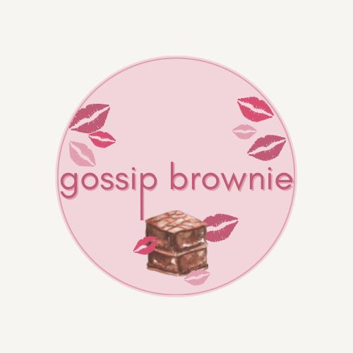

Gossip Brownie
História da empresa
ANA BEATRIZ, MARIA LUIZA, MARIANA, RENATA E SOPHIA FORMAM UM GRUPO DE AMIGAS, ESTUDAM NA MESMA SALA. ELAS QUEREM JUNTAR DINHEIRO PARA FORMATURA DO ENSINO MÉDIO, ENTÃO DECIDEM ABRIR SEU PRÓPRIO NEGÓCIO, FAZENDO O QUE SABEM MAS DE UM JEITO QUE CONSIGAM LUCRAR E PAGAR TODAS AS DESPESAS, EM UM CURTO PRAZO DE 2 ANOS. PARA CHAMAR A ATENÇÃO DO PÚBLICO, ABREM O PEQUENO NEGÓCIO INSPIRADO NA SERIE DO ANOS 2000 GOSSIP GIRL.
Produto inovador
COMO A EMPRESA É INSPIRADA NA SÉRIE, COMO PRODUTO INOVADOR, DECIDEM FAZER UM SABOR DE BROWNIE DIFERENTE E QUE TENHA LIGAÇÕES AO SERIADO. A COR ROSA DO BROWNIE E O GLITTER DECORANDO CHAMAM A ATENÇÃO DOS CLIENTES, PRINCIPALMENTE PELO SABOR SER REVELADO SOMENTE NA HORA EM QUE VOCÊ COME.
Produtos
NOSSO CARDÁPIO CONTÉM 5 SABORES DE BROWNIE RECHEADO:
* MARACUJÁ
* NINHO
* MEIO AMARGO COM NOZES
* OREO
* GOSSIP BROWNIE (SABOR SECRETO)
Público alvo - Swot
EM PREDOMINÂNCIA, AS MULHERES, ENTRE 15 E 40 ANOS, DE CLASSE MÉDIA, DE TODAS AS REGIÕES DE LONDRINA, JÁ QUE FICAMOS NO CENTRO. NÃO TEMOS UM PUBLICO ALVO ESPECÍFICO, PODEMOS ATENDER QUALQUER UM APAIXONADO POR DOCE. OU UMA PESSOA QUE ESTÁ CAMINHANDO PELO CALÇADÃO DE LONDRINA. MAS TAMBÉM CHAMAMOS A ATENÇÃO DOS FÃS DE GOSSIP GIRL.
Financeiro
* FATURAMENTO: 1.000,00 REAIS
* GASTOS: 350,00 REAIS
* INVESTIMENTO: 450,00 REAIS
* RELAÇÃO DE CRESCIMENTO: 1º MÊS
Redes sociais - Marketing Digital
PREÇO: 12,00 REAIS
PRODUTOS: BROWNIES RECHEADOS
PROMOÇÃO: NA COMPRA DE 3, CADA UM POR 10,00 REAIS
NÓS TRABALHAMOS COM BORDAGEM DE CLIENTES, E TEMOS A RENATA E A SOPHIA COMO AS VENDEDORAS DA GOSSIP BROWNIE. SOMENTE PRESENCIAL, NÃO FAZEMOS VENDAS ONLINE. USAMOS O INSTAGRAM COMO FERRAMENTA DE PROPAGANDA, POSTANDO COM FREQUÊNCIA, UM PERFIL QUE CHAME A ATENÇÃO E SEMPRE INTERAGINDO COM OS NOSSOS SEGUIDORES.
Mais informações sobre a empresa